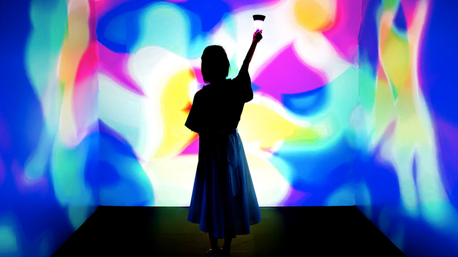

digital

nor
https://nor.tokyo/-どんな人
建築家、デザイナー、音楽家、エンジニアなど多様なバックグラウンドをもつメンバーによって、2017年に発足されたクリエイティブチームです。様々なテクノロジーを活用して、一般化された定義では捕捉しきれない未定義領域へアプローチし、空間設計、インスタレーション、プロダクト開発など、ハードとソフトの領域を横断した活動を行なっています。
-解説
四方を白い壁で囲まれた正方形の部屋の中央に、光を放つトーチ状のデバイスが置いてあります。この部屋の位置情報は、すべて色相環（水平方向：彩度，垂直方向：明度）として置き換えられており、デバイスを持って歩き回ることによって、位置情報を取得し、それに合わせた音響と映像が生成されます。
-好きなところ
鑑賞者との関わりによって空間が変化していくとてもインタラクティブな作品でした。実際にデバイスをもって歩き回ると、空間がどんどん変化して行って不思議な感覚になりました。この作品は共感覚をテーマに作られているそうです。自分が行動するごとに新たな色や音が現れてくる体験をすることで、共感覚がどんなものか体験できた気がしました。